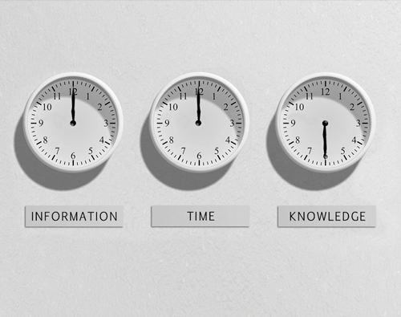
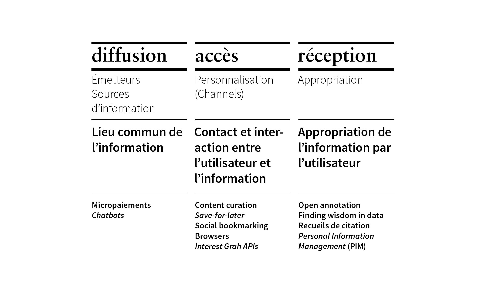
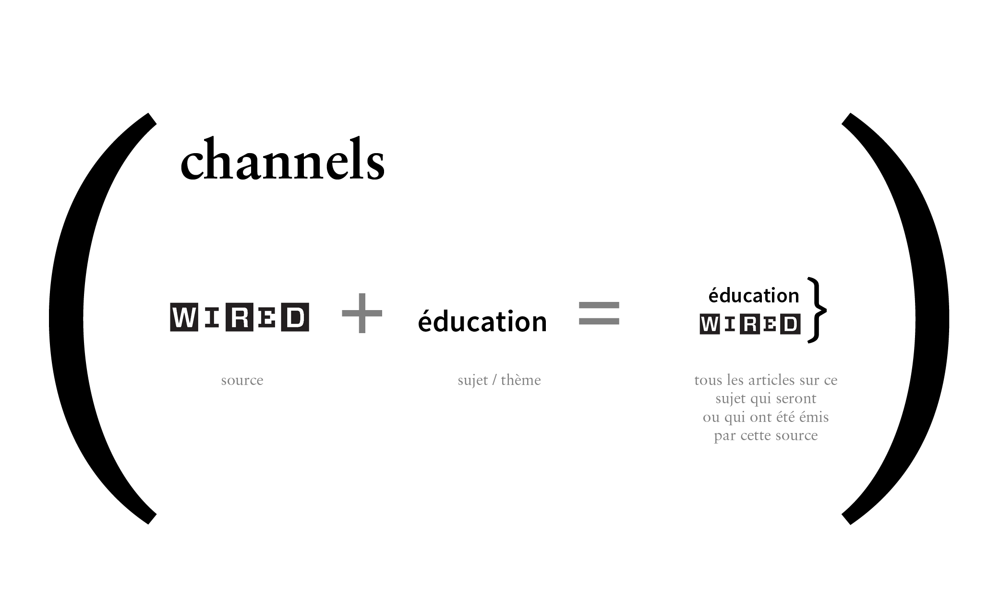
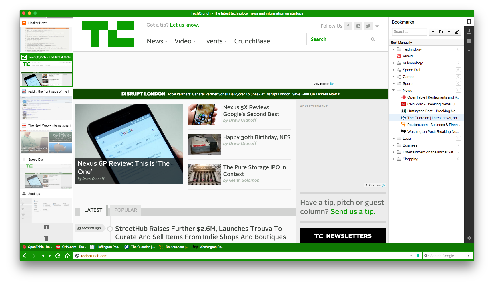
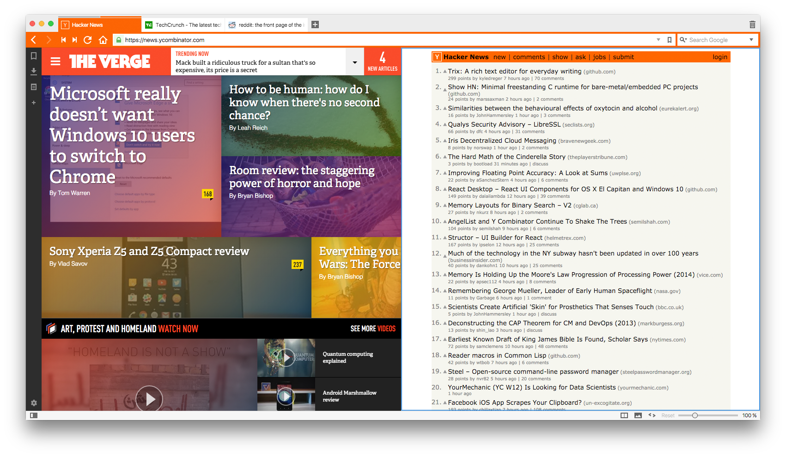
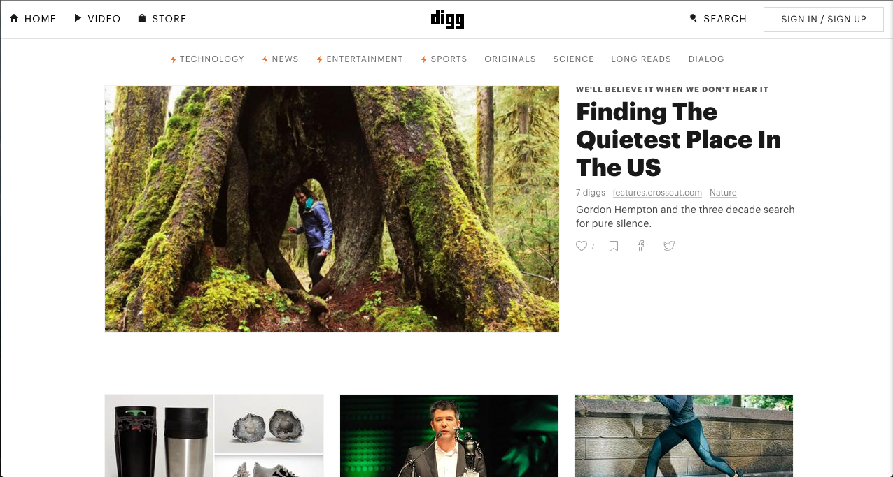
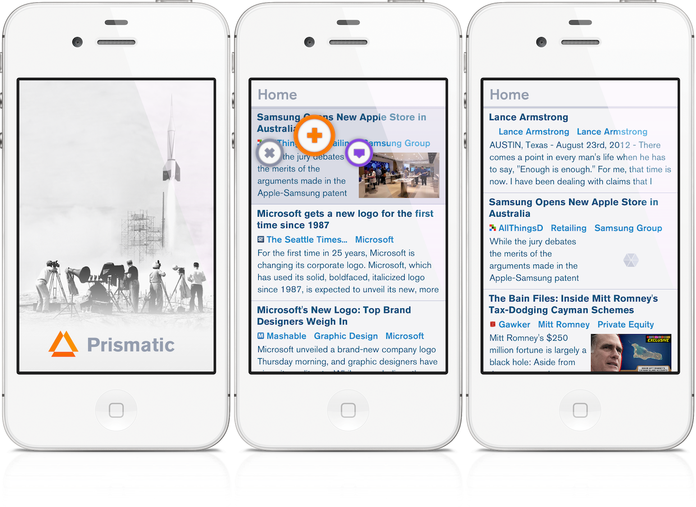

À une époque de surabondance d’information et de data, comment se place l’élève, le lecteur, l’humain pour faire de l’ordre dans tout ça? Comment répondre, réagir à une telle surdose de contenu? Il semble parfois impossible de reconnaître et accéder rapidement à de l’information de qualité, de source officielle, et présentée de manière à optimiser la compréhension. La révolution numérique nous place face à un infoglut[def.: Information glut: Masses of continuously increasing information so poorly catalogued or organized (or not organized at all) that it is almost impossible to navigate through them to search or draw any conclusion of meaning.] [businessdictionary.com].
Ce dernier a des conséquences directes sur nos manières de lire, d’apprendre et d’appréhender le monde autour de nous. Nous sommes placés devant la trinité impossible de l’information:
The impossible trinity of information
“A fundamental problem faced by the general public and the members of an academic discipline in the information age is how to find the most authoritative, comprehensive, and up-to-date information about an important topic.” – Edward Zalta, a philosopher at Stanford’s Center for the Study of Language and Information. Those three requirements— authoritative, comprehensive, and up-to-date— are to information what the “impossible trinity” is to economics. You can only ever have one or two at once.

Prémisse
La prémisse de ce projet est de développer les bases théoriques d’une plateforme Web qui, de manière utopique, réunirait tous les types de médias de l’information dans l’optique d’uniformiser les moyens de diffusion, d’accès et de réception de l’information.

Il s’agirait d’offrir à l’utilisateur un seul lieu centralisé, un portail global où naviguer, consulter et absorber les connaissances du monde.
Problématique
Cette plateforme utopique devrait aider l’utilisateur à trouver du sens dans toute cette information (sensemaking) pour lui permettre de se sentir chez-soi dans tout ce qu’il lit, découvre, apprend. Plusieurs outils différents existent pour gérer cette problématique, mais leur pluralité en cause justement une autre, la fragmentation de l’information. Nous devrions tous avoir la possibilité d’entretenir une seule identité virtuelle connectée à toutes les sources d’information et qui simplifierait donc notre utilisation du Web. Tout les contenus qui nous intéressent, découvrables, consultables, et archivables en un endroit. Par exemple, nos résultats de recherches pour x projet personnel seraient regroupés en un dossier
interopérable
, accessible de n’importe où, et qui entretiendrait les hyperliens originaux.
"Because working with a collection of personal information – that you yourself has collated/curated – feels like thinking, it’s a sort of natural extension to your memory." [KFTF]
J’essaie de rapprocher l’expérience du Web avec l’expérience de la pensée humaine. Pourquoi sommes-nous encore aux prises avec le premier modèle d’interface que le Web n’a jamais connu? Fenêtres, onglets, boutons, champs de textes, etc.
"When copy/pasting links, the link should remember some additionnal information like, where the link was first found, original reference text with the highlighted excerpt in context."
Par exemple, au lieu d’accumuler nos favoris en une liste déroulante, pourquoi ne pas créer des liens personnalisés entre les pages web en les superposant par dessus la page qui a initialement engendré la recherché? Ainsi, on peut associer directement le contenu secondaire au contenu d’intérêt qui nous a originalement interpelé. C’est le principe du drag&link où l’utilisateur peut sélectionner, glisser et relâcher n’importe quel morceau d’information en le réorganisant et en demeurant assuré que l’information conserve sa source directement, en un seul clique.
Dans l'optique de ma prémisse, voici les réflexions, théories de quelques auteurs qui rejoignent ma pensée.
The Shallows
p.44-45 (chapitre Tools of The Mind) “Every technology is an expression of human will. Through our tools, we seek to expand our power and control over our circumstances – over nature, over times and distance, over one another. Our technologies can be divided, roughly, into four categories, according to the way they supplement or amplify our native capacities. One set […] expands our physical strength, dexterity or resilience. A second set, which includes the microscope, the amplifier […] extends the range or sensitivity of our senses. A third group, spanning such technologies as […] the birth control pill, and the genetically modified corn plant, enables us to reshape nature to better serve our needs or desires. The map and the clock belong to the fourth category, which might best be called […] “intellectual technologies”. These include all the tools we use to expand or support our mental powers – to find and classify information, to formulate and articulate ideas, to share know-how and knowledge, to take measurements and perform calculations, to expand the capacity of our memory. […] It is our intellectual technologies that have the greatest and most lasting power over what and how we think. They are our most intimate tools, the ones used for self-expression, for shaping personal and public identity, and for cultivating relations with others.”
p.106-107 “[…] Web’s tendency to turn all media into social media will have a far-reaching effect on styles of reading and writing and hence on language itself.”
p.123-124-125 “If working memory is the mind’s scratch pad, then long-term memory is its filing system. […] In order for us to think about something we’ve previously learned or experienced, our brain has to transfer the memory from long-term memory back into working memory. […] Experiments indicate that as we reach the limits of our working memory, it becomes harder to distinguish relevant information from irrelevant information, signal from noise. We become mindless consumers of data.”
p.142 “The mental functions that are losing the “survival of the busiest” brain cell battle are those that support calm, linear thought – the ones we use in traversing a lengthy narrative or an involved argument, the ones we draw on when we reflect on our experiences or contemplate an onward or inward phenomenon. The winners are those functions that help us speedily locate, categorize, and assess disparate bits of information in a variety of forms, that let us maintain our mental bearings while being bombarded by stimuli. These functions are, not coincidentally, very similar to the ones performed by computers, which are programmed for the high-speed transfer of data in and out of memory. Once again, we seem to be taking on the characteristics of a popular intellectual technology.” (Survival of the busiest brain cell, or how our brains are becoming computers)
iA.net on
Improving The Digital Reading Experience [tools = analogies of our bodies]
“The hammer is an extension of the hand. Glasses are an extension of the eye, the radio an extension of the ear. As long as our tools are recognizable as analogies of our body, the form and function of these tools are easily comprehensible.
But once you enter the digital realm, analogies with our body break down. Instead, digital tools are analogies of analogies. Text editors are an analogy of typewriters, typewriters are an analogy of writing with pen and paper, writing with pen and paper is, initially, a substitute for our memory. In general the computer now works as an extension for our head controlling those tools.”
Chapitre 6: Le portail des connaissances, un accès rapide à la meilleure information sur tous les sujets
La principale difficulté de la navigation sur le Web est de trouver les sources les plus fiables et de qualité. Google nous donne rapidement accès à des millions de liens (dont beaucoup sont subventionnés) mais donne accès à des contenus biaisés.
“Dans un monde ideal, un moteur de recherche sur Internet devrait nous aider à trouver les meilleures sources d’information, les plus neutres et les plus objectives, sur tous les sujets."
Jean Lanoix théorise un service internet globalisé qui serait celui d’une organisation internationale appelée le «Portail des connaissances» et dont la mission serait de
«donner rapidement accès aux meilleures connaissances disponibles sur la planète à ce jour». Son modèle d’affaires serait la raison de son succès. Ce portail serait un pôle d’attraction international pour les sommités mondiales dans tous les domaines. Des groupes de spécialistes et d’experts indépendants oeuvrant dans différents domaines s’associeraient à des réalisateurs et à des maisons de production pour créer des documents multimédias qui correspondraient aux critères de sélection de ce portail. Les contenus doivent donc absolument correspondre aux exigences de l’organisation. Les organisations peuvent afficher fièrement le logo officiel d’agrément du portail des connaissances sur leur page d’accueil s’ils répondent aux 8 critères suivants:
1- Toujours fournir la meilleure information disponible (informations récentes et fiables)
2- S’efforcer de transmettre une information facile à comprendre pour le public en général et même pour les publics plus ciblés (travail de vulgarisation)
3- Ne pas accepter de financement de la part des commanditaires ayant des intérêts dans le domaine des connaissances (Possibilité de se faire commanditer, tant que les dons des fondations privées n’ont pas d’incidence sur l’information offerte dans le site)
4- Accepter une quantité limitée de publicités faites par des annonceurs ayant un intérêt particulier à l’égard du sujet (20%)
5- N’avoir aucune affiliation directe à des organisations d’activistes ou groupes d’intérêts politiques et syndicaux (affiliations interdites car ces organisations « engagées » ont tendance à présenter l’information dans l’optique de générer des réactions émotive de la part du public)
6- Ne pas être propriétaire, entièrement ou partiellement, d’une entreprise ou d’une organisation ayant des intérêts à protéger ou à promouvoir (l’organisation doit prouver qu’il n’y a aucune source de conflit d’intérêts)
7- Constamment rechercher l’objectivité et soutenir les efforts en ce sens par l’utilisation de fonctions de feed-back contextuel (l’objectivité parfaite est utopique. À l’écran, une icône de feed-back est toujours présente et permet à tout utilisateur de faire parvenir ses commentaires)
8- Ne pas vendre de produits et de services autres que de l’information (ne doivent pas vendre de produits et services qui les placent en situation de conflit d’intérêts)
Diffusion
Émetteurs, sources d’information
Comment l'information est jetée dans le monde
(1) Dans cette plateforme utopique, les sources d’information seraient unifiées, simplifiées, dénudées de tout élément superflu. De la manière la plus logique possible, l’usager pourrait naviguer dans du contenu exclusivement pertinent pour lui. Dans l’idéal de sortir de l’attention economy,
on réduirait ainsi la perte de temps et de concentration. Ainsi, l’usager reste dans le flow de sa création, de sa recherche, de sa curiosité. Il s’agirait d’une expérience utilisateur instinctive, où l’importance est mise aux bons endroits, où l’information est hiérarchisée et optimisée pour le cognitif.
Voici quelques exemples de services où ces principes sont appliqués.
Blendle
En 2013, Alexander Klöpping et Marten Blankesteijn ont fondé Blendle, une plateforme qui se veut le iTunes du journalisme et qui fonctionne sur le principe des micropaiements. Le service, offert jusqu’à présent en Hollande et en Allemagne, est parvenu à offrir un lieu numérique où les journaux et magasines gardent l’essence de leur identité. L’équipe de Blendle a développé un template CSS unique pour chacune des 75+ publications qu’il regroupe.
Ils gèrent une bibliothèque de plus de 200 polices de caractères web pour permettre à chaque article de refléter l’identité du magazine ou du journal d’où il provient.
L’idée derrière le principe des micropaiements est de permettre à l’utilisateur de ne payer que pour les articles qu’il aime. Blendle permet même de se faire rembourser 0.25$
pour un article sur lequel on aurait cliqué accidentellement, ou dont on n’aurait pas apprécié la lecture.
Leurs débuts en Hollande ont été fructueux; après 6 mois d’existence, 140 000 utilisateurs utilisaient déjà leur service, c’est presque toute la population du pays! Un mois après leur lancement en Allemagne, ils avaient déjà attiré plus d’un demi million d’utilisateurs.
«We believe that a big part of our success so far comes from our design: we think the layout of an article is as important as the article itself, and that’s why we invested a lot of time and money creating a premium reading experience.» «A tabloid article should look a bit trashy, an article from a stylish magazine should look, well, stylish, and an article from The New York Times should feel like it’s an article from The New York Times.» «What if the reading experience of articles in Blendle would be as close as possible to the original experience of the articles? The results were stunning: by using different fonts, colors and layouts for every single newspaper and magazine, the articles suddenly felt more valuable.»
Chatbots
(WeChat and soon Facebook)
Les chatbots sont des espaces de communication qui prennent la forme d’interfaces de messagerie instantanée, mais qui partagent en fait du contenu généré par des bots – agents virtuels ou agents conversationnels – gérés par des compagnies et basé sur des mots clés. En Chine, le paysage numérique se sait très différent du nôtre. Là-bas, la censure est très sévère et les habitants, n’ayant pas accès à Google ou Facebook comptent sur une application appelée WeChat pour pratiquement tout ce qui est du domaine de la recherche d’information sur le Web. C’est sur WeChat qu’ils entretiennent des conversations de groupe entre amis, mais c’est aussi via les bots de WeChat qu’ils commandent un taxi, vérifient les prévisions météorologiques, ou s’informent sur les nouvelles d’actualité. Ce système centralisé s’est avéré être très intuitif et a vite été intégré dans la vie quotidienne des gens. Bien sûr, le phénomène des chatbots sort peut à peu des murs de la Chine. Facebook a récemment annoncé qu’il intègrerait de ces bots à son application Messenger.
“What are bots? Think of them as interactive services that provide a conversational experience and contrast them with traditional “static” apps.” Phil Libin (Medium)
“In a static UX, you have to learn how to operate each control; push this tab to go here, then swipe left, then push the little ‘i’ button, and so on. In a conversational UX… you just have a conversation. This doesn’t necessarily mean speech input and output, or texting, although it’ll often include those elements. It means that the product understands what you want to do and responds dynamically.”
“That’s going to require a whole new approach to design,” any company can now build a chatbot that users can talk with.
"To me it's about bringing back all the best parts of the interaction between people and businesses," David Marcus, vice president of messaging products at Facebook, says in an interview. "What we’re trying to build with bots are rich conversational experiences. That’s what we believe will be the future of interactions and services."
But there are deep reasons why chatbots make sense. The app model has stalled out: People don’t use a ton of apps, and they don’t download many either. The reason is simple: There’s an enormous amount of friction associated with learning about a new app, downloading it, signing up for it, and then remembering you even have it.
“That’s why the experience with bots is less free-form than real chat. You’re presented with a series of options that you click, progressively telling the bot your preferences for how often you’ll be notified or what kinds of information you’d like to receive—"Like a Goosebumps choose your own adventure book," explains Jeremy Goldberg, a product designer for business and platform at Facebook.”
Bots are going to be based on four design guidelines: That the bots should be conversational, issuing messages in a natural tone of voice and short, pithy responses paced quickly but not so quickly that the bot is oppressively present— like a chat partner hanging on your every word and expecting just as quick of a response. The responses themselves can be interactive bubbles. Some let you horizontally scroll through a list of sweatshirts via Everlane or a list of popular stories via CNN. Others present options that you can tap— for example, you could share your present location with a weather app like Poncho— thus quickly making your conversations more useful.
Accès
Contact et interaction
Comment l'information parvient à l'utilisateur
(2)
La personnalisation individuelle serait le principe de base de cette plateforme idéale. Il faut s’éloigner du principe d’agrégation sociale parce que non, «ce qui est populaire dans votre réseau» n’est pas nécessairement pertinent pour vous à cet instant précis. Il s’agirait de donner le pouvoir à l’utilisateur afin qu’il puisse choisir précisément les fils (channels) d’information qu’il désire recevoir dans son quotidien.

C’est à lui de personnaliser son interface, et de contrôler les flux qui entrent dans son habitat digital. Au niveau des moteurs de recherche également, un changement doit se produire. Les résultats de nos recherches sont trop souvent biaisés par la publicité mal ciblée et l’influence du data recueilli sur nos réseaux sociaux.
Content curation (3 méthodes)
On peut tout d’abord parler de curation de contenu. C’est l’essence même de la navigation sur le Web, elle nous permet un point d’entrée, un point de départ. Il existe trois principales méthodes de curation de contenu. Il y a premièrement le filtrage collaboratif (collaborative filtering). Ce principe se base sur la quantité de votes et de vues des pairs. Notamment, Youtube
et Amazon se basent sur ce principe pour proposer leurs services aux utilisateurs. Deuxièmement, l’évaluation sociale (social rating) se base sur les commentaires et recommandations des usagers. Le système repère un utilisateur ayant des intérêts similaires aux nôtres pour nous proposer des recommandations basées sur son activité à lui. Facebook et Flipboard utilisent cette méthode. Les paramètres pour évaluer la valeur sociale sont basés sur le nombre de partages (shares), d’appréciations (likes), de votes (upvotes). Plus ces derniers s’accumulent vite, plus ce morceau de contenu obtient de valeur. Il existe finalement l’analyse sémantique, qui s’inscrit précisément dans l’optique de mon projet. Basée sur le principe d’analyser les faits et de trouver des relations entre le sujet et l’objet de requête, cette technique procède à une analyse factuelle de l’information. Dans l’optique du Web Sémantique, le système décortique le contenu en sujets, sous-sujets et catégories. On utilise donc des mots-clés directement liés à l’information que le contenu contient, et non à des facteurs quantitatifs comme des algorithmes ou des biais publicitaires.
Pocket
Pocket est une application mobile, desktop ainsi qu’un plugin pour les navigateurs permettant d’enregistrer des articles, vidéos, pages web– essentiellement n’importe quoi– de les garder pour plus tard et de les consulter hors-ligne. À une époque d’instantanéité telle que la nôtre, beaucoup de services «save for later» existent et font preuve d’une grande popularité. Leur utilisation devient comme une extension de l’utilisation du Web. Pocket compte maintenant 22 millions d’utilisateurs, avec une banque de 2 milliards d’items enregistrés.
L’omniprésence de ce type de service ne fait que confirmer que dans une utilisation optimale du Web, ce genre d’outils nécessite réellement d’être intégré, fusionné à l’interface même de navigation du Web. Il est absurde que nous devions avoir recours à un lieu tiers pour collectionner l’information que nous aimons sur le Web. Logiquement, le Web devrait nous permettre d’avoir notre espace personnel, un chez-soi dans l’infiniment grand de l’Internet.
Mon expérience personnelle avec Pocket, a changé ma vision de l’information sur le Web. Depuis que je peux archiver et organiser les articles ou pages Web qui m’intéressent vraiment, mes critères de sélection d’information sont plus élevés. En se basant sur les items que je sauvegarde, que je lis et que j’étiquète (système de tags), Pocket me propose, via une infolettre hebdomadaire, des liens qui sont susceptibles de m’intéresser. C’est ainsi que je découvre de nouvelles sources d’information. Plus j’en explore, plus j’ai de la facilité à reconnaître celles qui sont fiables ou de qualité. Je me mets donc à enregistrer davantage d’articles provenant de sources de qualité, ce qui encourage Pocket à m’en faire découvrir encore d’autres, et ainsi de suite. Pocket devient comme une mon coin de l’Internet personnalisé, je m’attarde aux recommandations que Pocket effectue en se basant sur mes données puisqu’elles naissent directement de mes propres intérêts fondamentaux.
Vivaldi (browser)
On ne réalise souvent pas qu’il existe plusieurs autres navigateurs Web que les plus répandus (Google Chrome, Safari, Internet Explorer, Mozilla Firefox). Vivaldi propose un navigateur web des plus personnalisables. En testant l’utilisation de Vivaldi, on se rend vite compte que la navigation Web à laquelle on est habitués est extrêmement restreinte.

Vivaldi offre tellement d’options de navigation et de personnalisation de l’interface que l’on se surprend rapidement à explorer les différentes options et à régler et personnaliser son «ergonomie» d’utilisation.

Vivaldi permet réellement de hiérarchiser les outils dont on se sert. Avec les commandes rapides, il propose un seul endroit pour prendre le contrôle de votre navigateur. On peut organiser finement nos onglets avec les options d’empilement et de juxtaposition d’onglets. Un panneau de notes est toujours disponible.
Il est clair que le navigateur Web se situe fondamentalement à l’intersection des trois axes principaux (Diffusion, Accès, Réception) car c’est dans ce lieu digital que nous pouvons uniformiser les sources d’information, personnaliser les moyens d’accès et réunir tous les outils nécessaires à son appropriation.
Digg digg.com
Un exemple d’agrégation sociale pourrait être le service offert par le site web Digg. Au lieu de laisser le contenu se faire trier par des curateurs, c’est la communauté même qui procède à la qualification des articles dans le flux de Digg.
«WHAT WE DO: Digg delivers the most interesting and talked about stories on the Internet right now.
Digg does curation: building products that make life smoother, simpler, and smarter.

Re-founded in 2012, Digg now provides the most relevant and compelling content to millions of users a month. Using proprietary data sources and a crack editorial team, we cut through the clutter of the Internet and make sense of the noise so you don’t have to. Digg has everything you’ll see later, now.»[About] Welcome to Digg.com, a user-driven news Web site that brings together hundreds of thousands of people to do the work of finding, submitting, reviewing and featuring news stories drawn from every corner of the Web. [How Stuff Works]
Prismatic Prismatic
est une application qui n’est malheureusement plus en service. Outre son modèle économique qui s’est avéré ne pas être viable, Prismatic avait une très bonne idée.
Prismatic se voulait un réseau social pour tes intérêts, un endroit où découvrir des choses sur des sujets qui t’intéresse mais qui n’ont pas à se retrouver sur les fils Facebook ou LinkedIn. La petite compagnie avait développé un Interest Graph API.
“As Prismatic explains, the interest graph is "a model that helps us understand our users, their interests, publishers, content, and the connections between them. By aligning with users’ interests, the interest graph enables recommendations of products and content to deliver an experience that people care about." Access to the interest graph is what the new API allows.”
This personalised news aggregation app which shut down after 4 years of activity wanted to be the only news discovery app to bring you the best of everything you’re interested in.
“Four years ago, we set out to build a personalized news reader that would change the way people consume content,” the Prismatic team wrote in a
blog post. “For many of you, we did just that. But we also learned content distribution is a tough business and we’ve failed to grow at a rate that justifies continuing to support our Prismatic News products.”

«Effortlessly discover stories based on your interests. As soon as you sign up with Facebook, Twitter or G+, we start learning about you and connecting you with the most interesting stories. Prismatic started out as a smart personal news feed with simple layouts that creates a delightful reading experience. Since obtaining Series A funding, we have begun to significantly build our product and company.»
Interest Graph application programming interfaces (APIs) for third-party developers boosts content discoverability.
«The startup announced a pivot today to become a “social network for your interests,” where you can indulge your passion for pastry, your fanaticism for football, or your craze for cats without bothering all your friends and colleagues.»
Venture Beat
“Current social networks box you in,” founder Bradford Cross told VentureBeat. “If you’re in tech, but also into cooking and hiking, it’s hard to follow enough cooking and hiking people, and your followers are probably expecting tech from you, so there’s social pressure to avoid sharing about cooking and hiking.”
Réception
Appropriation de l’information
Comment le contenu est absorbé par l'utilisateur
(3)
La réception de l’information signifie l’acte cognitif de consommation du contenu. La lecture, la compréhension, l’appropriation de l’information. Ceci implique souvent la manipulation de l’information, la possibilité de la réorganiser et de la classer. L’interface idéale présenterait des moyens d’appropriation digne de l’époque où le livre était le média d’information par excellence. Annoter, surligner, découper, garder, archiver, documenter, classifier. Telle devrait être l’interaction entre l’usager et l’information, instinctive. Une interface usager directe, une médiation entre humain et contenu limitée à sa forme la plus claire. Idéalement, il faudrait proposer un système où il est facile de retrouver les liens qu’on juge pertinent, facile d’organiser les savoirs qu’on apprend et qu’on désire garder de côté. Tout un domaine de recherche se penche sur cette facette; c’est la gestion des informations personnelles, ou Personal Information Management (PIM). Qu’il s’agisse d’offrir à l’utilisateur la possibilité d’entrer dans une vue immersive, une lecture concentrée, continue, sans hyperliens ni publicité ni distractions, pour compléter une longue lecture, ou de personnaliser ses options d’affichage, ou encore de lui offrir un espace d’annotation ouvert où il peut commenter et partager avec autrui sur le contenu qu’il consomme, autant de moyens sont possibles pour lui de visualiser facilement, et de différentes manières, toute l’information qu’il collectionne, pour ensuite pouvoir la réorganiser, vérifier si elle est toujours pertinente, garder les liens à jour et lier de nouveaux éléments entre eux.
Hypothes.is
La mission d’Hypothes.is est de créer une nouvelle couche par dessus le Web. Un niveau supérieur d’information où l’annotation et la discussion sont ouvertes à tous et permettent le libre partage de connaissances. L’équipe de Hypothesis prétend pouvoir permettre “a conversation over the world’s knowledge.”
Leur mot d’ordre est l'interopérabilité: L'interopérabilité est la capacité que possède un produit ou un système, dont les interfaces sont intégralement connues, à fonctionner avec d'autres produits ou systèmes existants ou futurs et ce sans restriction d'accès ou de mise en œuvre.
Dans l’optique du open source, ils pensent que des outils simples peuvent tous nous aider à améliorer la qualité de l’information sur Internet et dans le grand monde qui nous entoure.
« Our team is building an open platform for discussion on the web. It leverages annotation to enable sentence-level critique or note taking on top of news, blogs, scientific articles, books, terms of service, ballot initiatives, legislation and more. Everything we build is guided by our principles. In particular that it be free, open, non-profit, neutral and lasting to name a few.”
Annotating All Knowledge
A new open layer is being created over all knowledge. A coalition of some of the world’s key scholarly publishers, platforms, libraries, and technology organizations are coming together to create an open, interoperable annotation layer over their content.
For personal note-taking, peer review, copy editing, post-publication discussion, journal clubs…
It is going to bring this new layer upon human knowledge, an additional strata of conversation over publications.
Annotating is a way of us understanding the social impact of the work that we do.
Le fondateur de Content Mine, Peter Murray Rust, précise que le principe de l’annotation ouverte porte une valeur politique.
«Politically, it’s terribly important that citizens of the world feel that they own the public Web and that it’s not controlled by central providers that have a narrow and very often monetary oriented way of presenting this content. So it’s democracy, and it’s innovation.»
Robert Darnton
Dans son ouvrage «Apologie du livre : Demain, aujourd’hui, hier», paru en 2009, Robert Darnton confirme d’où nous vient l’instinct de l’annotation comme moyen d’appropriation de l’information.
Diplômé de Harvard et Oxford, Darnton est un historien américain, spécialiste des Lumières européennes. Il est professeur à l’Université de Princeton et directeur de la Harvard University Library.
Dans Apologie du livre, Darnton met en parallèle les moyens électroniques de communication avec la puissance libérée par Gutenberg voilà plus de cinq siècles ; il en mesure les effets anthropologiques sur la lecture ainsi que les avantages mutuels qui lient bibliothèques et Internet. Dans le chapitre La lecture et ses mystères, il présente les anas (recueils de citations) que l’on avait l’habitude de tenir en parallèle à nos lectures. Selon lui, ces carnets de notes que l’on remplissait de citations, de faits notables, de pensées, permettaient au lecteur de mettre en forme la matière du monde.
«Lecture et écriture étaient donc des activités inséparables. Elles entraient dans un effort continu pour tirer un sens des choses car le monde était empli de signes et vous pouviez y lire votre chemin; en tenant un registre de vos lectures, vous faisiez un livre de votre cru, marqué du sceau de votre personnalité.» (p.26)
Pivot
Microsoft Live Labs
Dans les laboratoires de recherche de Microsoft, Gary Flake et l’équipe de Pivot ont développé un outil de visualisation de data. Dans un TedTalk paru en 2010, il en fait la démonstration en direct. Il commence par manipuler, à l’aide du logiciel Pivot, des données concernant les taux de mortalité en les classant par sexe ou groupe d’âge. Il prouve ensuite que ce concept peut aller encore plus loin lorsqu’il prend comme matière première les pages couvertures des revues Sports Illustrated, qu’il classe en ordre de parution ou selon la vedette qui y paraît, et tout ça en quelques cliques. C’est quand il commence à manipuler de l’information sortie tout droit de Wikipédia que l’on comprend la réelle portée que peut avoir ce projet. Avec les principes du data visualisation, Flake nous prouve que l’idée de la navigation Web à laquelle on s’est habituée ne s’appuie en fait que sur peu d’éléments intuitifs.
«We’re navigating the web for the first time as if it were actually a web. Not from page to page, but at a higher level of abstraction.»
«Instead of being trapped in data, we might actually extract information. And, instead of dealing just with information, we can tease out knowledge. And if we get the knowledge, then maybe even there’s wisdom to be found.»
{kind=link}